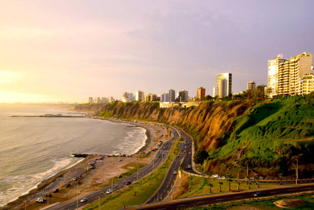
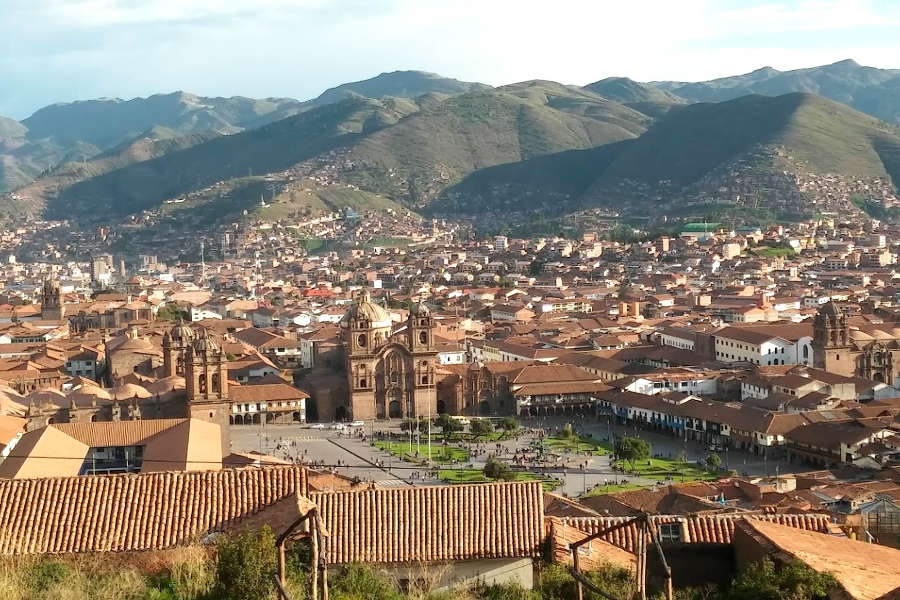
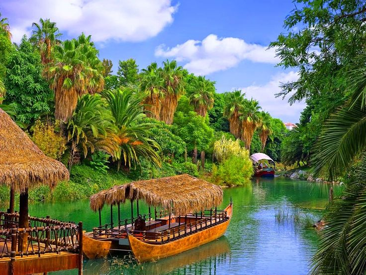

Introducción
Perú, situado en la costa oeste de América del Sur, es una nación rica en historia, cultura y paisajes impresionantes. Con una historia que se remonta a las antiguas civilizaciones preincaicas, como los Moche, Chavín y Nazca, Perú es un crisol de tradiciones que se entrelazan con la herencia colonial española. La geografía diversa de Perú es igualmente impresionante, desde las montañas de los Andes hasta la selva amazónica, pasando por el desierto costero y las fascinantes líneas de Nazca. Esta variada topografía ha dado lugar a una biodiversidad única, con una amplia gama de especies animales y vegetales que se encuentran en todo el país. La cocina peruana es reconocida a nivel mundial por su diversidad y exquisitez. Platos emblemáticos como el ceviche, el ají de gallina y el lomo saltado son solo algunos ejemplos de la rica oferta gastronómica del país, que combina ingredientes locales con influencias culinarias de todo el mundo. Además de su patrimonio cultural y natural, Perú es famoso por sus impresionantes sitios arqueológicos, como Machu Picchu, una de las Siete Maravillas del Mundo Moderno, y las misteriosas líneas de Nazca, que continúan desconcertando a los arqueólogos y visitantes por igual. En resumen, Perú es un destino fascinante que ofrece una experiencia única para los viajeros interesados en la historia, la cultura, la naturaleza y la gastronomía.
Regiones
  